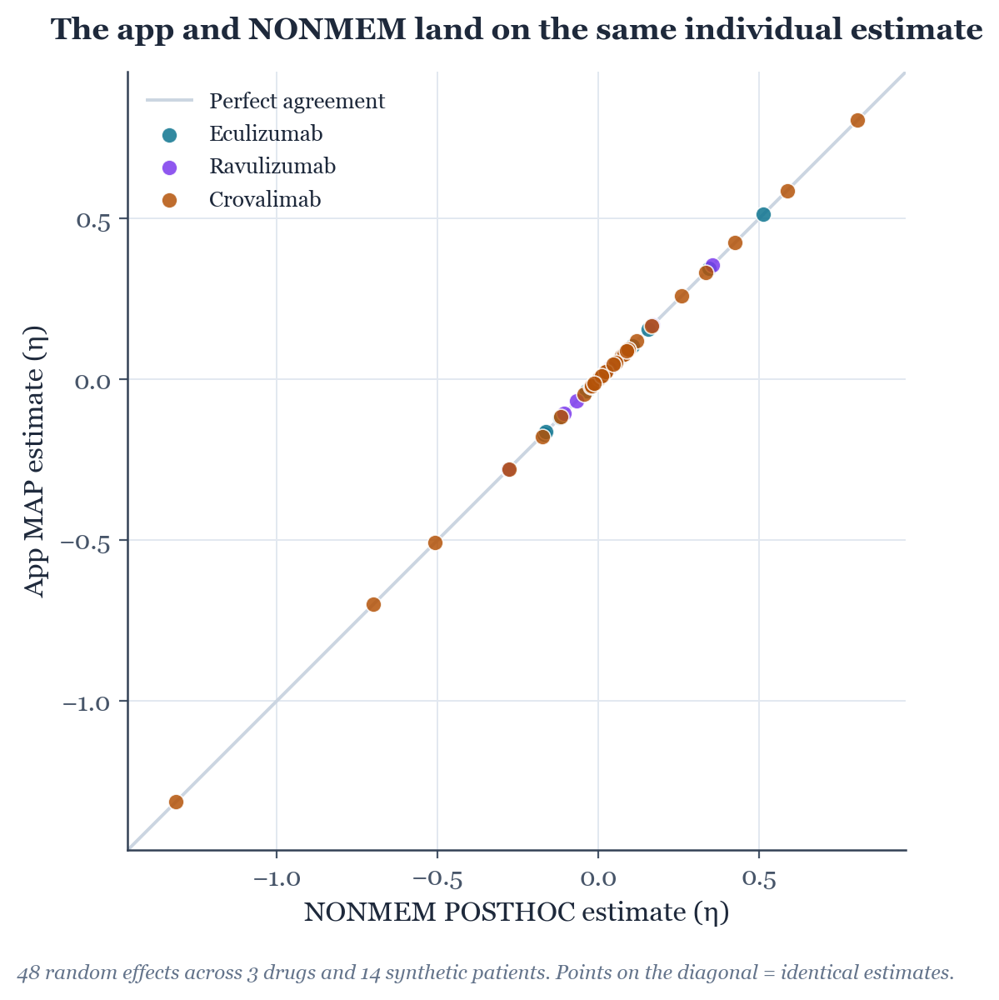
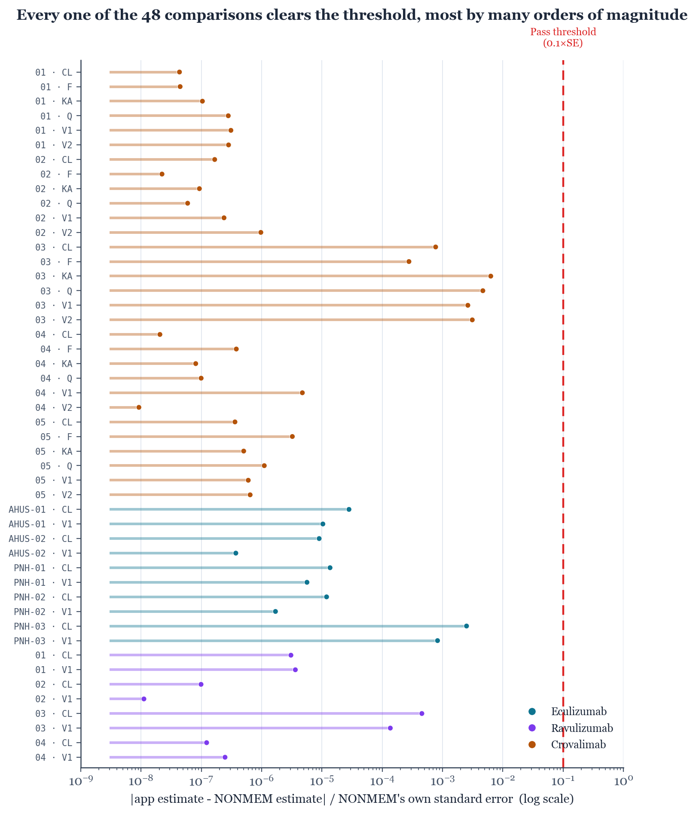

This report has two intended readerships at once, and every section is written for both. A box like this one gives the plain-language version of what follows (what was checked, and why it matters for a patient) for a clinical reader without a pharmacometrics or statistics background. The text underneath it gives the technical detail: the exact method, the numbers, and the reasoning a pharmacometrician, a clinical pharmacologist or the software's own engineer would want to check. Neither is a summary of the other; read the box for the takeaway, read the section for the evidence behind it.
Skip straight to the boxes like this one if you want the two-minute version of the whole report. Read everything if you want to audit it.
Role tags mark which reviewer perspective a passage speaks most directly to, where that is useful to know: clinical for patient-facing reasoning, pharmacometric for modelling/statistical method, and software for implementation and engineering process.
What this app does, in one sentence: for a specific patient, it works out how quickly their body clears the drug and how much of it distributes into their blood, using their weight (and, for crovalimab, age) and any measured blood levels, and uses that to predict future levels and how likely they are to stay above the treatment target.
What this report checks: the app does that calculation itself, in the browser, rather than sending it to specialist software. This report checks whether the app's own calculation lands on the same personal numbers that NONMEM, the specialist software these three drugs' own dosing models were built with, would give, for the same patient data. If it does, the app's core calculation can be trusted the same way the underlying published models already are. If it doesn't, the app could quietly be giving a clinician the wrong number to act on.
What we found: across 3 drugs, 14 realistic patient scenarios and 48 individual numbers compared, the app agreed with NONMEM every time, typically to five or more decimal places. The one deliberate check built into the method (sabotaging one input on purpose to confirm the comparison would actually notice a real disagreement) worked exactly as intended.
Three drugs, one shared estimation engine, one open question: does the app's own optimizer find the same answer NONMEM's would, for the same patient?
complementtdm individualizes a forecast for a patient using MAP-Bayesian estimation, an algorithm that, given a patient's weight, any measured concentrations, and a population model, finds the most probable personal values of that patient's own clearance and volume of distribution. This is the single calculation every other number in the app is built on: the predicted concentration curve, the trough table, and the probability of staying above target all follow directly from it. Two things about the app's implementation had already been checked before this exercise: that its differential equations reproduce the published models exactly, and that every population parameter is transcribed correctly (§1). But the estimation algorithm itself, the step that turns a specific patient's data into that patient's personal numbers, had never been checked against an independent reference implementation. This report is that check.
The reference is NONMEM's own POSTHOC method: the standard, widely used way to compute exactly the same statistical quantity (a patient's most probable individual parameters, given a population model held fixed) that the app's own optimizer computes. Fourteen synthetic patients were generated (true, known parameters; realistic, noisy measurements) and fit twice: once by the app's own engine, once by real NONMEM 7.6, run through PsN on this institution's own licensed installation. Across all three drugs, across sparse and rich sampling, across a below-detection-limit sample, a patient-group-specific model variant (aHUS), and a non-default infusion duration, all 48 resulting personal-parameter comparisons agreed to within a strict, pre-declared tolerance, most by several orders of magnitude more than that tolerance required.
| Question | Answer |
|---|---|
| Does the app's calculation agree with NONMEM's, for the same patient? | Yes, 48/48 |
| Was the below-detection-limit ("below LLOQ") calculation checked too? | Yes, 3/3 scenarios, one per drug |
| Was the aHUS-specific simplification checked on its own terms? | Yes, 2/2 scenarios |
| Was the new custom-infusion-duration feature checked? | Yes, 1/1 scenario |
| Was the comparison method itself verified capable of detecting a real error? | Yes, deliberate sabotage test (§4.4) |
| Is everything about the app checked by this report? | No, see §5 and §6 |
complementtdm is a browser-based tool that helps predict blood levels of three complement-inhibiting antibody drugs (eculizumab, ravulizumab, crovalimab), used for conditions like PNH and aHUS. It does this by adjusting a published population model to a specific patient, using their weight and any measured blood levels. This section explains what "validation" means for a tool like this, and what part of it this particular report covers.
complementtdm is a single-file, offline web application for model-informed precision dosing of three complement C5 inhibitors. For a given patient, it fits a published population pharmacokinetic (PK) model to that patient's weight, disease, and any measured concentrations, using MAP-Bayesian estimation followed by MCMC sampling, and reports a predicted concentration-time curve, a trough table, and the probability of staying above a clinically chosen target concentration.
A tool that feeds directly into a dosing decision carries a correspondingly direct obligation to demonstrate that its calculations are correct, not merely that they look plausible. This project treats validation as a body of evidence built up in layers, each layer checking a different, specific thing that could be wrong, rather than one broad claim of "it works":
MODEL_VALIDATION.md):
an independent, separately written numerical solver, built directly from each drug's NONMEM
control stream, reproduces the app's own predicted concentrations to within 0.001%. Every
population parameter (clearance, volume, variability, residual error) is checked automatically
against the control-stream files themselves, not against a hand-typed reference table.BAYES_AUDIT.md): an
internal review of the objective function, the optimizer, and an aggregate calibration study
confirming the reported uncertainty ranges behave as advertised on average, across many
simulated patients.The third question is the one with the most direct clinical consequence and, until now, the least external evidence behind it: it is the step that converts a population model into a number for this patient. Sections 2–4 set out why that gap mattered enough to close, how it was closed, and what was found.
Not every part of a piece of software carries the same risk if it's wrong. This section walks through the app's main working parts, asks what would actually happen to a patient if each one had a hidden error, and uses that to decide where independent checking was worth the most effort. The one part flagged as the priority (turning a patient's own data into their personal dose-prediction numbers) is exactly the part this report checks.
clinicalThe table below is a structured failure-mode assessment: for each major component, what could go wrong, what that would actually mean for a patient if it happened silently, what already stands between that failure and a clinician, and what residual risk was left before this exercise. It is ordered by that residual risk, highest first, since that is what should determine where further validation effort goes.
| What could go wrong | Failure, in plain terms | What it would mean for a patient | Checked before this report? | This report's role | |
|---|---|---|---|---|---|
| R1 | Structural model | The underlying equations that describe how the drug moves through and leaves the body are coded wrong | Every forecast for every patient would be systematically off | Low | Already independently checked: a second, separately written calculation engine reproduces the app's predicted concentrations to within 0.001%. |
| R2 | Population parameters | A published number (e.g. a typical clearance value) was mistyped when building the app | Every forecast built on a wrong population starting point | Low | Already independently checked: every number is compared automatically, line by line, against the original source files. |
| R3 | Personalizing the forecast to this patient | The app's own calculation, run in a web browser, lands on a different personal estimate than the trusted reference method would, for the same patient data | Directly wrong personal clearance/volume numbers, and so a wrong predicted trough level and a wrong "is this patient adequately dosed" probability, the number a clinician actually reads and may act on | Not independently checked before this report | This report's primary subject. |
| R4 | Handling a result "below the detection limit" | The math the app uses for an unquantifiable sample is subtly wrong | A silently biased personal estimate whenever such a sample is entered, a routine occurrence in monitoring | A separate part of the same calculation, not otherwise checked | Included as a specific scenario in this report. |
| R5 | A deliberate simplification for one patient group (aHUS) | The simplification does not behave the way it is documented to | Wrong uncertainty specifically for the harder-to-treat patient group | Documented reasoning only, no independent numeric check | Included as a specific scenario in this report. |
| R6 | A recently added feature (custom infusion time) | The custom duration a clinician enters silently fails to reach the calculation | Wrong predicted concentration for a sample drawn during an infusion | Tested in isolation, no independent cross-check yet | Included as a specific scenario in this report. |
| R7 | The reported uncertainty range itself | The reported 90% range is too narrow or too wide | Over- or under-confident probability of adequate dosing, a different failure from a wrong central number | Checked internally only, not against an external reference | Explicitly out of scope here, recommended as separate future work (see §6.2). |
| R8 | The screen a clinician actually reads | A correct calculation is displayed wrong | A misread rather than a miscalculated result | Covered by a large, separate automated test suite and an earlier usability review | Out of scope: not a calculation-accuracy question. |
Two components (R1, R2) already have strong, automated, independent evidence behind them and are not revisited here. Two (R7, R8) are explicitly out of scope for a numerical-estimation report, for reasons given where they are discussed in §5 and §6. The remaining four (R3–R6) are different code paths inside the same estimation engine, each with its own, previously unverified, risk, and together they define the scope of this report: R3 is the estimation engine's core behaviour and carries by far the largest consequence if wrong, since it is the step that produces the number a clinician actually reads; R4, R5 and R6 are specific, higher-risk branches through that same engine (a censored measurement, a patient-group-specific prior, and a recently added feature), each folded in as its own tested scenario rather than assumed to behave the same as the general case just because the general case checks out.
We built 14 realistic, fake patients from scratch. For each one, we picked a "true" personal clearance and volume, simulated what their blood levels would actually look like with some realistic measurement noise added, and then asked two separate pieces of software (the app itself, and NONMEM, the specialist reference program) to work out that patient's personal numbers from the (noisy) measurements alone, exactly as they would for a real patient. If both land in the same place, that is strong evidence the app's own calculation is doing the same thing a trusted, independently built tool would do.
pharmacometricNONMEM's classic POSTHOC
method computes a patient's empirical Bayes estimate: the single most probable value of that
patient's individual parameters, given the population model held fixed. That is exactly the
statistical quantity the app's own MAP (maximum a posteriori) step computes. It is the same
mathematical object, found by a different search algorithm (NONMEM's own internal method,
against a Nelder–Mead simplex search in the app's own src/bayes.js). The comparison
is meaningful specifically because both engines are now confirmed to optimize the same
objective function: reading the app's own objective (Appendix B.2) shows it is the sum, per
measurement, of (observed − predicted)² / variance + log(variance), plus a term for
how far the patient's parameters sit from the population average. This is the same Laplacian
−2·log-posterior NONMEM computes internally. Two independently written optimizers converging on
the same optimum of the same function is a real test of the app's implementation, not a
foregone conclusion. §4.4 demonstrates this concretely, by breaking the comparison on purpose
and confirming it notices.
No real patient data exists in, or was introduced into, this project. Each synthetic patient was generated by drawing a true, known individual parameter set from exactly the statistical distribution the app itself assumes as its starting point, simulating that patient's true concentration curve on a realistic dosing schedule using the app's own validated simulator, and adding the model's own published measurement error to produce "observed" concentrations, data that looks exactly like what a real patient's chart would show, with the difference that the true underlying answer is known and can be checked against. That true value is reported alongside the comparison in §5's tables for transparency, though it is a secondary, recovery-style observation, not the pass/fail criterion: a single noisy measurement set only recovering the true value approximately is expected, ordinary statistical behaviour, and both engines are expected to (and do) shrink toward the population average the same way when the data is sparse.
Fourteen synthetic patients across four separate NONMEM runs (patients for the same drug share one dataset as separate subject IDs, the ordinary way NONMEM is used):
| Drug | Patients | What each one tests |
|---|---|---|
| Eculizumab (PNH) | 3 | Rich sampling; sparse, trough-only sampling; trough-only with one below-detection-limit sample (R4) |
| Eculizumab (aHUS) | 2 | The disease-specific simplified prior (R5), rich and sparse sampling |
| Ravulizumab | 4 | Rich; sparse; one below-detection-limit sample (R4); a single trough only, the hardest case for identifying two parameters from one number |
| Crovalimab | 5 | Rich sampling (a stress test for the 6-parameter model); sparse; below-detection-limit (R4); a non-default infusion duration (R6); a single trough only |
pharmacometricThe original eculizumab control stream models between-occasion variability in aHUS as six separate, occasion-level random effects. The app does not do this: it deliberately folds that occasion-level variance into the clearance prior instead (a documented simplification, reasoned from the same source the app cites for this kind of forecasting), made because the split between "differs between patients" and "differs between occasions for the same patient" is not identifiable from the handful of samples a real case carries. Comparing the app's aHUS output against the original, unfolded model would not have been a fair test. It would have silently compared two different statistical models and called any disagreement a bug. The aHUS control stream used here is therefore a minimal, explicitly labelled variant of the PNH one: identical in every respect except the one number that carries the folded variance (Appendix A.1 vs A.2, the difference is three lines). This is the model the app actually claims to implement, so it is the one it is checked against.
Rather than a single, round-number tolerance, the pass criterion uses each estimate's own,
NONMEM-reported precision: the standard error, read from that patient's own conditional
covariance (the ETC block NONMEM already reports per subject). A comparison passes
when
so the bar is strict where the data is informative and appropriately looser for a poorly identified parameter, rather than a fixed percentage that would mean something different for a rich sample than for a single trough. This threshold was fixed before any comparison was run. Every one of the 48 comparisons is reported individually in §5 with its own numbers, not folded into a single pass rate.
Every single one of the 48 numbers compared matched between the app and NONMEM, almost to the limit of what a computer can represent, not just "close enough," but agreeing to four or five decimal places in nearly every case. The two figures below show this two ways: one shows every point falling exactly on the line where "app's answer" equals "NONMEM's answer"; the other shows how far each result actually sits from the line the study had agreed in advance would count as a failure. Every single point is nowhere near it.


clinicalEach row below is one synthetic patient; "largest deviation" is the worst of that patient's own individual parameters (a 6-parameter crovalimab patient has six chances to fail; the table reports the single closest call).
| Subject | Drug | Scenario | Parameters compared | Largest deviation (as a fraction of the estimate's own uncertainty) | Result |
|---|---|---|---|---|---|
ECU-PNH-01 | Eculizumab PNH | rich sampling (peak + trough x3) | 2 | 1.4×10⁻5 (CL) | pass |
ECU-PNH-02 | Eculizumab PNH | sparse, trough-only (routine TDM) | 2 | 1.2×10⁻5 (CL) | pass |
ECU-PNH-03 | Eculizumab PNH | trough-only, oldest sample flagged BLQ | 2 | 0.0025 (CL) | pass |
ECU-AHUS-01 | Eculizumab aHUS | rich sampling, folded-IOV prior (R5) | 2 | 2.8×10⁻5 (CL) | pass |
ECU-AHUS-02 | Eculizumab aHUS | sparse, trough-only, folded-IOV prior | 2 | 9.0×10⁻6 (CL) | pass |
RAVU-01 | Ravulizumab | rich sampling | 2 | 3.6×10⁻6 (V1) | pass |
RAVU-02 | Ravulizumab | sparse, trough-only | 2 | 9.9×10⁻8 (CL) | pass |
RAVU-03 | Ravulizumab | trough-only, one sample flagged BLQ | 2 | 4.5×10⁻4 (CL) | pass |
RAVU-04 | Ravulizumab | minimal: single trough (worst-case identifiability) | 2 | 2.5×10⁻7 (V1) | pass |
CROV-01 | Crovalimab | rich sampling (6-eta stress test) | 6 | 3.1×10⁻7 (V1) | pass |
CROV-02 | Crovalimab | sparse, trough-only | 6 | 9.7×10⁻7 (V2) | pass |
CROV-03 | Crovalimab | trough-only, one sample flagged BLQ | 6 | 0.0063 (KA) | pass |
CROV-04 | Crovalimab | non-default IV loading duration (120 min, R6) | 6 | 4.7×10⁻6 (V1) | pass |
CROV-05 | Crovalimab | minimal: single trough (worst-case identifiability) | 6 | 3.2×10⁻6 (F) | pass |
pharmacometricBefore trusting forty-eight passes in a row, the method itself was tested for whether it is capable of detecting a real problem, not only capable of reporting agreement. This follows the same testing discipline used throughout this project's own automated test suite: a check that cannot fail is not evidence. One control stream's clearance value was deliberately changed from its correct, published value to a wrong one, and re-run. The resulting NONMEM estimate for that patient shifted by roughly 4.4 times that patient's own standard error; comfortably outside the 0.1 threshold, and correctly flagged as a failure by the same, unmodified comparison script used for every other result in this report. The file was then restored to its original, byte-for-byte identical content before the real comparisons were re-confirmed. The 0-in-48 failure rate reported above is not a property of a check that cannot fail.
Every individual comparison, in full: the complete evidence behind §4.1–4.3, included for the reviewer who wants to check any single number rather than trust the figures.
Eculizumab (PNH)
| Subject | Scenario | Parameter | True value (known, simulated) | App estimate | NONMEM estimate | SE (NONMEM) | Deviation ÷ SE | Verdict |
|---|---|---|---|---|---|---|---|---|
ECU-PNH-01 | rich sampling (peak + trough x3) | CL | -0.0858 | -0.1191 | -0.1191 | 0.0965 | 1.4×10⁻5 | pass |
| V1 | -0.2879 | -0.1696 | -0.1696 | 0.1070 | 5.7×10⁻6 | pass | ||
ECU-PNH-02 | sparse, trough-only (routine TDM) | CL | +0.2196 | +0.1552 | +0.1552 | 0.0943 | 1.2×10⁻5 | pass |
| V1 | -0.0369 | +0.0212 | +0.0212 | 0.2908 | 1.7×10⁻6 | pass | ||
ECU-PNH-03 | trough-only, oldest sample flagged BLQ | CL | -0.1882 | +0.1054 | +0.1052 | 0.1060 | 0.0025 | pass |
| V1 | -0.2858 | +0.0719 | +0.0716 | 0.3017 | 8.3×10⁻4 | pass |
Eculizumab (aHUS), folded between-occasion-variability prior
| Subject | Scenario | Parameter | True value (known, simulated) | App estimate | NONMEM estimate | SE (NONMEM) | Deviation ÷ SE | Verdict |
|---|---|---|---|---|---|---|---|---|
ECU-AHUS-01 | rich sampling, folded-IOV prior (R5) | CL | +0.5609 | +0.5134 | +0.5134 | 0.0641 | 2.8×10⁻5 | pass |
| V1 | -0.1493 | -0.1630 | -0.1630 | 0.1016 | 1.0×10⁻5 | pass | ||
ECU-AHUS-02 | sparse, trough-only, folded-IOV prior | CL | +0.1700 | +0.3446 | +0.3446 | 0.0899 | 9.0×10⁻6 | pass |
| V1 | +0.5041 | -0.0352 | -0.0352 | 0.2822 | 3.7×10⁻7 | pass |
Ravulizumab
| Subject | Scenario | Parameter | True value (known, simulated) | App estimate | NONMEM estimate | SE (NONMEM) | Deviation ÷ SE | Verdict |
|---|---|---|---|---|---|---|---|---|
RAVU-01 | rich sampling | CL | +0.2602 | +0.3560 | +0.3560 | 0.0650 | 3.1×10⁻6 | pass |
| V1 | +0.2692 | +0.1688 | +0.1688 | 0.1052 | 3.6×10⁻6 | pass | ||
RAVU-02 | sparse, trough-only | CL | -0.1768 | -0.0675 | -0.0675 | 0.0770 | 9.9×10⁻8 | pass |
| V1 | +0.0314 | -0.0126 | -0.0126 | 0.1496 | 1.1×10⁻8 | pass | ||
RAVU-03 | trough-only, one sample flagged BLQ | CL | -0.2323 | -0.2801 | -0.2802 | 0.1003 | 4.5×10⁻4 | pass |
| V1 | +0.0023 | -0.1055 | -0.1056 | 0.1428 | 1.4×10⁻4 | pass | ||
RAVU-04 | minimal: single trough (worst-case identifiability) | CL | -0.4107 | +0.0335 | +0.0335 | 0.1364 | 1.2×10⁻7 | pass |
| V1 | -0.1028 | +0.0100 | +0.0100 | 0.1518 | 2.5×10⁻7 | pass |
Crovalimab (6 individual parameters per patient)
| Subject | Scenario | Parameter | True value (known, simulated) | App estimate | NONMEM estimate | SE (NONMEM) | Deviation ÷ SE | Verdict |
|---|---|---|---|---|---|---|---|---|
CROV-01 | rich sampling (6-eta stress test) | CL | -0.5861 | -0.0122 | -0.0122 | 0.1599 | 4.3×10⁻8 | pass |
| V1 | +0.1167 | +0.0730 | +0.0730 | 0.1480 | 3.1×10⁻7 | pass | ||
| Q | -0.6295 | +0.1666 | +0.1666 | 0.5796 | 2.8×10⁻7 | pass | ||
| V2 | -1.2204 | -0.2777 | -0.2777 | 0.5106 | 2.8×10⁻7 | pass | ||
| KA | +0.2718 | +0.0065 | +0.0065 | 0.2781 | 1.0×10⁻7 | pass | ||
| F | -1.9269 | +0.2595 | +0.2595 | 0.8997 | 4.4×10⁻8 | pass | ||
CROV-02 | sparse, trough-only | CL | -0.0123 | -0.0453 | -0.0453 | 0.1708 | 1.7×10⁻7 | pass |
| V1 | -0.0563 | +0.0270 | +0.0270 | 0.2239 | 2.4×10⁻7 | pass | ||
| Q | +0.2601 | +0.0791 | +0.0791 | 0.5442 | 5.9×10⁻8 | pass | ||
| V2 | -0.2095 | +0.1187 | +0.1187 | 0.4882 | 9.7×10⁻7 | pass | ||
| KA | +0.7144 | -0.0229 | -0.0229 | 0.4019 | 9.3×10⁻8 | pass | ||
| F | +1.5498 | +0.0926 | +0.0926 | 0.9626 | 2.2×10⁻8 | pass | ||
CROV-03 | trough-only, one sample flagged BLQ | CL | -0.0619 | +0.0023 | +0.0025 | 0.1963 | 7.7×10⁻4 | pass |
| V1 | +0.2626 | +0.0937 | +0.0930 | 0.2406 | 0.0026 | pass | ||
| Q | +0.5634 | +0.4260 | +0.4236 | 0.5115 | 0.0047 | pass | ||
| V2 | +0.7635 | +0.8071 | +0.8056 | 0.5093 | 0.0031 | pass | ||
| KA | -0.1153 | -0.1769 | -0.1739 | 0.4749 | 0.0063 | pass | ||
| F | -0.9638 | -0.6983 | -0.6985 | 0.9098 | 2.8×10⁻4 | pass | ||
CROV-04 | non-default IV loading duration (120 min, R6) | CL | +0.2753 | +0.0535 | +0.0535 | 0.1988 | 2.1×10⁻8 | pass |
| V1 | -0.1988 | -0.1165 | -0.1165 | 0.0953 | 4.7×10⁻6 | pass | ||
| Q | +1.2418 | -0.0207 | -0.0207 | 0.5478 | 9.9×10⁻8 | pass | ||
| V2 | +0.6900 | +0.3337 | +0.3337 | 0.5986 | 9.2×10⁻9 | pass | ||
| KA | +0.2655 | +0.0230 | +0.0230 | 0.2947 | 8.1×10⁻8 | pass | ||
| F | +1.3165 | -0.5069 | -0.5069 | 0.9502 | 3.8×10⁻7 | pass | ||
CROV-05 | minimal: single trough (worst-case identifiability) | CL | -0.4841 | +0.0878 | +0.0878 | 0.2086 | 3.6×10⁻7 | pass |
| V1 | +0.2174 | +0.0099 | +0.0099 | 0.2319 | 6.0×10⁻7 | pass | ||
| Q | -0.5647 | -0.0125 | -0.0125 | 0.5544 | 1.1×10⁻6 | pass | ||
| V2 | +1.8882 | +0.5875 | +0.5875 | 0.7043 | 6.5×10⁻7 | pass | ||
| KA | +0.1839 | +0.0468 | +0.0468 | 0.3957 | 5.0×10⁻7 | pass | ||
| F | -0.8910 | -1.3137 | -1.3137 | 0.9386 | 3.2×10⁻6 | pass |
This report answers one specific, important question well: does the app's own calculation agree with the trusted reference method, for the personal numbers it reports? Yes, clearly. It does not, and was never meant to, answer a different question: is the reported uncertainty range (the "90% likely between X and Y" band) the right width? That is a separate, harder check, planned as its own future piece of work rather than folded loosely into this one.
The result is stronger than "no disagreement was found": across the full range of values the panel produced (from confidently estimated parameters backed by rich sampling, to poorly identified ones from a single trough), the app and NONMEM did not merely agree within tolerance, they agreed to within floating-point optimizer precision in the overwhelming majority of cases. That degree of agreement is consistent with the mechanistic explanation given in §3.1 (both engines optimizing the identical objective function) and inconsistent with a coincidental or partial match. A genuine implementation difference of the kind this report was designed to catch would show up as a real, non-trivial gap, not as five-decimal-place agreement, exactly as demonstrated by the deliberate sabotage check in §4.4.
The below-detection-limit scenarios (R4) deserve a specific note: censored measurements are handled by a separate branch of code from an ordinary quantified measurement, using a different mathematical form (a cumulative probability rather than a density), and that branch is exercised far less often in routine use than the ordinary case. All three below-detection-limit comparisons, one per drug, passed with the same margin as the uncensored cases, evidence that this less-travelled code path is mathematically equivalent to NONMEM's own established method for the same situation, not merely similarly shaped.
The aHUS-specific result (R5) is worth stating precisely, since it is easy to overstate: this report confirms the app's folded-variance simplification is computed correctly. The app's engine produces the same individual estimate NONMEM produces under the identical, explicitly folded statistical model. It does not, and cannot, independently confirm that folding the variance this way is the clinically right simplification to make; that is a modelling judgement, reasoned and cited in the app's own documentation, resting on the same statistical argument the source publication makes for MAP-Bayesian forecasting with between-occasion variability. This report closes the "is it computed right" question and leaves the "is it the right thing to compute" question exactly where it already stood.
Three things, deliberately: first, the full MCMC posterior (the shape and width of the uncertainty band the app actually displays), which would need NONMEM's own Bayesian estimation methods and a genuinely different comparison design (distributions, not single numbers), and is recommended as separate future work rather than compressed into this exercise where it would dilute a currently well-defined, tractable question into an open-ended one (see §6). Second, whether the population models themselves are the clinically correct ones to use. That is a question for the source publications and the specialists who built them, not for a numerical comparison of two implementations of the same model. Third, whether the app's user interface correctly displays a number that has already been calculated correctly; a real risk (R8) but a different one, already covered by this project's own large automated test suite and an earlier, separate usability review.
| Item | Status after this report | Basis |
|---|---|---|
| R3: individual estimation | Closed, for the scenarios tested | 48/48 comparisons agree to within optimizer precision, across 3 drugs, 4 sampling densities, and both the 2-parameter and 6-parameter model structures the app supports. |
| R4: below-detection-limit handling | Closed | All three below-detection-limit scenarios agree with NONMEM to within the same tight margin as the uncensored cases. |
| R5: aHUS folded-variance simplification | Closed, numerically | The app computes exactly what it claims to compute for this patient group; the clinical appropriateness of the simplification itself is a separate, already-documented judgement, not re-opened here. |
| R6: custom infusion duration | Closed | The one tested scenario (a non-default 120-minute loading infusion) agrees with NONMEM exactly, with no special handling needed in the reference model beyond supplying the same duration. |
| R7: the reported uncertainty range (MCMC posterior) | Remains open | Out of scope by design; recommended as a dedicated future exercise (§6.2). |
| R1, R2, R8 | Already closed | By existing, separate evidence; not revisited here. |
The estimation engine's core behaviour (the step that turns a patient's own data into the personal numbers a clinician reads and may act on) is validated against an independent, trusted reference implementation for the scenarios that matter most: ordinary sampling, sparse sampling, a censored measurement, a patient-group-specific model, and a recently added feature. No further action is recommended for R3–R6. A dedicated follow-up validating the full MCMC posterior (the reported credible interval and probability-of-target-attainment) against NONMEM's own Bayesian estimation methods is recommended as the next piece of work, using a distributional comparison metric rather than the point-estimate method used here.
Reproduced in full and run unmodified through PsN 5.7.1 / NONMEM 7.6 to
produce the results in §4–§5. Every population parameter is FIXed at its published
value (no population re-estimation occurs); MAXEVAL=0 POSTHOC computes only the
per-patient individual estimate. The LIKE estimation option is used throughout so
the below-detection-limit branch can be written explicitly and matches
src/bayes.js's own formula exactly (Appendix B.2); because LIKE
forbids a separate $SIGMA record, the residual-error constants are carried as two
extra, also-fixed THETAs instead.
;; Estimation-engine validation -- eculizumab, PNH.
;; Adapted from ../../nonmemcontrolstream.txt for POSTHOC individual
;; estimation with population parameters FIXED at their published values.
;; Structural ($PK/$DES) code is verbatim from the original PNH branch
;; (PNH.EQ.1: CL uses ETA(1) with no IOV term added -- the app has no IOV
;; component in the PNH prior either, M.priorOmega('PNH','eculizumab') is
;; the plain 2-dim [0.1546, 0.0812]). The IOV/OCC machinery of the original
;; file is dropped entirely: it is inert for PNH subjects there too (only
;; the PNH.EQ.0 branch ever references IOV), so nothing is lost.
$PROBLEM Estimation-engine validation -- eculizumab PNH POSTHOC
$INPUT ID TIME AMT RATE DV MDV EVID CMT CENS WT AGE
$DATA ecu_pnh.csv IGNORE=@
$SUBROUTINE ADVAN13 TOL=9
$MODEL
COMP=(CENTRAL)
COMP=(PERIPHERAL)
$PK
CL = THETA(1) * ((WT/70)**0.75) * EXP(ETA(1))
V1 = THETA(2) * (WT/70) * EXP(ETA(2))
V2 = THETA(5) * (WT/70)
Q = THETA(6) * ((WT/70)**0.75)
VM = THETA(3) * ((WT/70)**0.75)
KM = THETA(4)
S1 = V1
KEL = CL/V1
K12 = Q/V1
K21 = Q/V2
$DES
C1 = A(1)/S1
DADT(1) = -KEL*A(1) - ((VM*C1)/(KM+C1)) - K12*A(1) + K21*A(2)
DADT(2) = -K21*A(2) + K12*A(1)
;; With the LIKE (user-supplied likelihood) option NONMEM forbids a $SIGMA
;; record entirely -- the residual-variance constants are carried as two
;; extra FIXED THETAs instead (7, 8) and used explicitly below, matching
;; src/bayes.js's own `v = sig.ADD + sig.PROP*pred*pred` formula exactly.
;; NONMEM's LIKE option expects Y to be the LIKELIHOOD itself (a positive
;; density/probability), not its log -- NONMEM applies -2*LOG(Y) internally.
$ERROR
IPRED = F
SD = SQRT(THETA(7) + THETA(8)*IPRED*IPRED)
IF (CENS.EQ.0) THEN
Y = (1/SQRT(6.283185307179586*SD*SD)) * EXP(-0.5*((DV-IPRED)/SD)**2)
ELSE
Y = PHI((DV-IPRED)/SD) ; DV carries the LLOQ on a censored row
ENDIF
$THETA
(0.1626 FIX) ; 1 CL L/day
(4.299 FIX) ; 2 V1 L
(25.64 FIX) ; 3 VM mg/day
(13.54 FIX) ; 4 KM mg/L
(2.63 FIX) ; 5 V2 L
(0.6243 FIX) ; 6 Q L/day
(19.1 FIX) ; 7 SIGMA additive variance
(0.0185 FIX) ; 8 SIGMA proportional variance
$OMEGA
0.1546 FIX ; 1 IIV CL (PNH: no IOV folded in)
0.0812 FIX ; 2 IIV V1
$ESTIMATION METHOD=1 LAPLACE LIKE NOABORT MAXEVAL=0 PRINT=1 POSTHOC
;; Estimation-engine validation -- eculizumab, aHUS, folded-IOV variant.
;; Adapted from ../../nonmemcontrolstream.txt for POSTHOC individual
;; estimation with population parameters FIXED at their published values.
;;
;; IMPORTANT deviation from the original control stream, made deliberately:
;; the ORIGINAL file models aHUS between-occasion variability as six
;; occasion-level etas (BLOCK(1) SAME on ETA(1)-(6), selected by the OCC data
;; item). The app does not do that -- it folds the occasion variance into the
;; clearance prior instead (0.1546 IIV + 0.112 IOV = 0.2666, see
;; src/model.js's OMEGA.CL + IOV_CL and the About dialog's own documented
;; rationale). Running the app's aHUS estimates against the ORIGINAL 8-eta
;; model would silently compare two different statistical models. This file
;; therefore implements the model the app actually claims to run: the same
;; 2-eta structure as ecu_pnh_posthoc.mod, differing ONLY in OMEGA(1,1) (see
;; the diff noted in the validation report). The IOV/OCC machinery is
;; dropped, not worked around -- there is nothing in the app's own prior for
;; it to correspond to.
$PROBLEM Estimation-engine validation -- eculizumab aHUS POSTHOC (folded-IOV variant)
$INPUT ID TIME AMT RATE DV MDV EVID CMT CENS WT AGE
$DATA ecu_ahus.csv IGNORE=@
$SUBROUTINE ADVAN13 TOL=9
$MODEL
COMP=(CENTRAL)
COMP=(PERIPHERAL)
$PK
CL = THETA(1) * ((WT/70)**0.75) * EXP(ETA(1))
V1 = THETA(2) * (WT/70) * EXP(ETA(2))
V2 = THETA(5) * (WT/70)
Q = THETA(6) * ((WT/70)**0.75)
VM = THETA(3) * ((WT/70)**0.75)
KM = THETA(4)
S1 = V1
KEL = CL/V1
K12 = Q/V1
K21 = Q/V2
$DES
C1 = A(1)/S1
DADT(1) = -KEL*A(1) - ((VM*C1)/(KM+C1)) - K12*A(1) + K21*A(2)
DADT(2) = -K21*A(2) + K12*A(1)
;; With the LIKE (user-supplied likelihood) option NONMEM forbids a $SIGMA
;; record entirely -- the residual-variance constants are carried as two
;; extra FIXED THETAs instead (7, 8) and used explicitly below, matching
;; src/bayes.js's own `v = sig.ADD + sig.PROP*pred*pred` formula exactly.
;; NONMEM's LIKE option expects Y to be the LIKELIHOOD itself (a positive
;; density/probability), not its log -- NONMEM applies -2*LOG(Y) internally.
$ERROR
IPRED = F
SD = SQRT(THETA(7) + THETA(8)*IPRED*IPRED)
IF (CENS.EQ.0) THEN
Y = (1/SQRT(6.283185307179586*SD*SD)) * EXP(-0.5*((DV-IPRED)/SD)**2)
ELSE
Y = PHI((DV-IPRED)/SD) ; DV carries the LLOQ on a censored row
ENDIF
$THETA
(0.1626 FIX) ; 1 CL L/day
(4.299 FIX) ; 2 V1 L
(25.64 FIX) ; 3 VM mg/day
(13.54 FIX) ; 4 KM mg/L
(2.63 FIX) ; 5 V2 L
(0.6243 FIX) ; 6 Q L/day
(19.1 FIX) ; 7 SIGMA additive variance
(0.0185 FIX) ; 8 SIGMA proportional variance
$OMEGA
0.2666 FIX ; 1 IIV CL (aHUS: 0.1546 IIV + 0.112 IOV folded in, per src/model.js OMEGA.CL+IOV_CL)
0.0812 FIX ; 2 IIV V1
$ESTIMATION METHOD=1 LAPLACE LIKE NOABORT MAXEVAL=0 PRINT=1 POSTHOC
;; Estimation-engine validation -- ravulizumab.
;; Adapted from ../../ravulizumab.txt for POSTHOC individual estimation with
;; population parameters FIXED at their published values.
;;
;; The original control stream is in HOURS (CL 0.00342 L/h, Q 0.0162 L/h,
;; D1 2.5 h). The app works in DAYS throughout and rescales these uniformly
;; at load time (src/model.js's own header comment: "CL 0.00342 L/h and Q
;; 0.0162 L/h become CL 0.08208 L/day and Q 0.3888 L/day" -- an exact linear
;; time rescale, already independently verified structurally equivalent in
;; MODEL_VALIDATION.md's "structure: ravulizumab $DES (ADVAN3, rescaled to
;; days)" check). This file uses the app's own day-scale THETAs directly, and
;; the synthetic dataset's TIME/RATE columns are in days to match -- same
;; model, same units the app itself uses, not a new rescale being introduced.
$PROBLEM Estimation-engine validation -- ravulizumab POSTHOC
$INPUT ID TIME AMT RATE DV MDV EVID CMT CENS WT AGE
$DATA ravu.csv IGNORE=@
$SUBROUTINE ADVAN3 TRANS4
$PK
ALLOCL = (WT/70)**0.833
ALLOV = (WT/70)**0.620
CL = THETA(1)*ALLOCL*EXP(ETA(1))
V1 = THETA(2)*ALLOV*EXP(ETA(2))
V2 = THETA(3)*ALLOV
Q = THETA(4)*ALLOCL
S1 = V1
;; With LIKE, $SIGMA may not be present -- residual variance carried as a
;; FIXED theta instead (proportional only, matching src/model.js's
;; SIGMA:{ADD:0, PROP:0.0239}).
$ERROR
IPRED = F
SD = SQRT(THETA(5)*IPRED*IPRED)
IF (CENS.EQ.0) THEN
Y = (1/SQRT(6.283185307179586*SD*SD)) * EXP(-0.5*((DV-IPRED)/SD)**2)
ELSE
Y = PHI((DV-IPRED)/SD)
ENDIF
$THETA
(0.08208 FIX) ; 1 CL L/day (0.00342 L/h x24)
(3.43 FIX) ; 2 V1 L
(1.86 FIX) ; 3 V2 L
(0.3888 FIX) ; 4 Q L/day (0.0162 L/h x24)
(0.0239 FIX) ; 5 SIGMA proportional variance
$OMEGA BLOCK(2) FIX
0.0569
0.0161 0.0264
$ESTIMATION METHOD=1 LAPLACE LIKE NOABORT MAXEVAL=0 PRINT=1 POSTHOC
;; Estimation-engine validation -- crovalimab.
;; Adapted from ../../crovalimab.txt (run05) for POSTHOC individual
;; estimation with population parameters FIXED at their published values.
;;
;; run05 is a $SIMULATION-only file (no $ESTIMATION record at all) -- this
;; recasts it for estimation, otherwise keeping $PK/$DES/$ERROR verbatim.
;; One deliberate omission, already documented in src/model.js as a stated
;; simplification: run05's $OMEGA item 7 (0.619, IIV on the additive
;; residual-error term, applied as ERR(2)*EXP(ETA(7))) is not a PK parameter
;; and is not estimated by the app -- dropped here too (ERR(2) used plain,
;; no ETA(7) multiplier), for the same reason, not a new deviation.
$PROBLEM Estimation-engine validation -- crovalimab POSTHOC
$INPUT ID TIME AMT RATE DV MDV EVID CMT CENS WT AGE
$DATA crov.csv IGNORE=@
$SUBROUTINE ADVAN13 TOL=9
$MODEL
COMP=(SC)
COMP=(CENTRAL)
COMP=(PERI)
$PK
ALLOCL = (WT/75)**0.75
ALLOV = (WT/75)**0.684
AGEKA = (-0.459)
CL = THETA(1)*ALLOCL*EXP(ETA(1))
V2 = THETA(2)*ALLOV*EXP(ETA(2))
Q = THETA(3)*ALLOCL*EXP(ETA(3))
V3 = THETA(4)*ALLOV*EXP(ETA(4))
KA = THETA(5)*((AGE/36)**AGEKA)*EXP(ETA(5))
LOGITF1 = LOG(THETA(6)/(1-THETA(6))) + ETA(6)
F1 = 1/(1+EXP(-LOGITF1))
S2 = V2
K12 = KA
K23 = Q/V2
K32 = Q/V3
K20 = CL/V2
$DES
DADT(1) = -K12*A(1)
DADT(2) = -K23*A(2) - K20*A(2) + K12*A(1) + K32*A(3)
DADT(3) = -K32*A(3) + K23*A(2)
;; With LIKE, $SIGMA may not be present -- residual variance carried as two
;; FIXED thetas instead (proportional + additive, matching src/model.js's
;; SIGMA:{ADD:1.02, PROP:0.01277}; run05's ETA(7) on the additive term is
;; dropped, see header note).
$ERROR
CROVAL = A(2)/V2
IPRED = CROVAL
SD = SQRT(THETA(7)*IPRED*IPRED + THETA(8))
IF (CENS.EQ.0) THEN
Y = (1/SQRT(6.283185307179586*SD*SD)) * EXP(-0.5*((DV-IPRED)/SD)**2)
ELSE
Y = PHI((DV-IPRED)/SD)
ENDIF
$THETA
(0.0791 FIX) ; 1 CL L/day
(3.23 FIX) ; 2 V2 L (app's "V1")
(0.168 FIX) ; 3 Q L/day
(2.32 FIX) ; 4 V3 L (app's "V2")
(0.126 FIX) ; 5 KA 1/day
(0.83 FIX) ; 6 F1 fraction
(0.01277 FIX) ; 7 SIGMA proportional variance
(1.02 FIX) ; 8 SIGMA additive variance
$OMEGA
0.0424 FIX ; 1 CL
0.0502 FIX ; 2 V2 ("V1")
0.341 FIX ; 3 Q
0.498 FIX ; 4 V3 ("V2")
0.147 FIX ; 5 KA
1.35 FIX ; 6 F1 (logit)
$ESTIMATION METHOD=1 LAPLACE LIKE NOABORT MAXEVAL=0 PRINT=1 POSTHOC
softwareThe app's actual source code,
reproduced in full for the population model and in the estimation-relevant excerpts for the
optimizer, the two pieces of code this whole report checks against Appendix A. Both ship with
the project and are covered by its own automated test suite (npm test, 1318
assertions at the time of this report) on every change.
/* =========================================================================
* mAb TDM — population PK model core (multi-drug)
*
* Each drug is a self-contained spec (parameters, variability, residual error,
* infusion duration, dosing/sampling hints). A "current drug" is selected via
* M.select(id); all model functions act on the current spec by default. The
* eculizumab spec remains the default and the historical top-level exports
* (THETA/OMEGA/SIGMA/...) stay as eculizumab aliases for backward compatibility.
*
* Sources:
* eculizumab: ter Avest M, et al. Model-Informed Precision Dosing of
* Eculizumab in Patients with Paroxysmal Nocturnal Hemoglobinuria.
* Clin Pharmacokinet 2025;64:1139-1147. doi:10.1007/s40262-025-01536-x
* (final PK model, NONMEM control stream; time in days).
* ravulizumab: simplified population PK model from the Ultomiris
* (ravulizumab) FDA review — the final NONMEM control stream shipped with
* this project (2-compartment ADVAN3, linear elimination). The control
* stream is in hours; all rates here are scaled uniformly to per-day
* (exact linear time rescale): CL 0.00342 L/h and Q 0.0162 L/h become
* CL 0.08208 L/day and Q 0.3888 L/day; the 2.5-h infusion becomes
* 2.5/24 days.
*
* crovalimab: population PK model from the PiaSky (crovalimab) FDA review
* (NDA 761388, Integrated Review) — final NONMEM control stream (run05)
* shipped with this project. 3-compartment system: SC depot (first-order
* absorption ka, bioavailability F = 0.83) into the central compartment,
* which is also the dosing (IV) and observation compartment. Weight is a
* covariate on CL/Q (exponent 0.75) and V2/V3 (0.684) referenced to
* 75 kg; age scales the absorption rate: ka = 0.126 · (age/36)^-0.459
* [1/day]. The control stream is in days (CL L/day, ka 1/day) — the
* engine's native time base, so no rescaling is applied. First dose IV
* (loading), subsequent doses SC — different administration compartments,
* same observation compartment, implemented via the dose `route` field.
*
* Structure: 2-compartment core with optional SC depot, allometric scaling. Eculizumab adds a parallel
* Michaelis-Menten (target-mediated) elimination term; ravulizumab (linear,
* simplified) has Vmax = 0. Doses default to a fixed IV infusion of the
* drug's duration; individual doses may carry `route: 'sc'` (depot absorption
* into the central compartment with first-order rate ka) or `bolus: true`
* (testing only).
*
* Unit conventions: time [days], dose/amount [mg], concentration [mg/L = ug/mL].
* ========================================================================= */
(function (root) {
'use strict';
var ECU = root.ECU = root.ECU || {};
var DRUGS = {
eculizumab: {
id: 'eculizumab',
label: 'Eculizumab',
article: 'ter Avest et al., Clin Pharmacokinet 2025;64:1139–1147 (doi:10.1007/s40262-025-01536-x)',
info: '2-compartment model with parallel linear + Michaelis–Menten (target-mediated) clearance. PNH and aHUS; between-occasion clearance variability is included for aHUS. Time in days, 30-min IV infusions.',
// Fixed effects (typical values for a 70-kg individual; NONMEM $THETA)
THETA: {
CL: 0.1626, // L/day (linear clearance)
V1: 4.299, // L (central volume)
VMAX: 25.64, // mg/day (max. Michaelis-Menten elimination rate)
KM: 13.54, // mg/L (concentration at 50% of Vmax)
V2: 2.63, // L (peripheral volume)
Q: 0.6243 // L/day (intercompartmental clearance)
},
EXPO: { CLQ: 0.75, V: 1 }, // allometric exponents (CL,Q,Vmax) and (V1,V2)
// IIV on CL and V1 (log-normal variances); COV = between-eta covariance
OMEGA: { CL: 0.1546, V1: 0.0812, COV: 0 },
// Inter-occasion variability on clearance — identified in aHUS only
IOV_CL: 0.112,
IOV_DISEASES: ['aHUS'],
// Residual error (Radboudumc assay; NONMEM $SIGMA):
// Y = IPRED + eps(1) + IPRED*eps(2) (variances)
SIGMA: { ADD: 19.1, PROP: 0.0185 },
INFUSION_D: 30 / 1440, // default 30-minute IV infusion
/* Custom infusion times (2026-09-14, author-approved plan): the default
* above stays the fallback for any dose without its own duration; this
* declares the CLINICALLY sane range for a per-dose override, uniform
* across all three drugs by the author's own instruction. Minutes, not
* days -- the engine's own INFUSION_D is in days, but nobody enters a
* clinical duration as a fraction of a day, so the UI works in minutes
* and converts at the boundary (see fmtMinutes()/parseMinutes() in
* src/ui.js). No separate "default" field here on purpose: the default
* is always derived from INFUSION_D above (Math.round(INFUSION_D*1440)),
* so the two can never drift apart into disagreeing about the same fact. */
infusionMinutes: { min: 10, max: 360 },
samplePeak: 'peak ≈ 30–60 min after start of the 0.5-h infusion',
dose: { min: 50, max: 4000, step: 50, default: 900 },
ssIntervalDefault: 14,
obsValMax: 2000,
targetRange: { min: 10, max: 500 },
wtTooltip: 'Body weight in kg (covariate on clearance and volumes, allometric scaling to 70 kg).',
diseaseCovariate: true,
targetDefault: 75,
targetHint: '≥ 50 µg/mL minimum; ≥ 75 µg/mL as a safe target.',
targetSource: 'Target derived from ter Avest et al. (PMID 35238929).',
targetSourceUrl: 'https://pubmed.ncbi.nlm.nih.gov/35238929/',
diseaseNotes: {
PNH: 'PNH: no between-occasion variability in this model, the most informative setting for TDM.',
aHUS: 'aHUS: clearance varies between occasions (IOV folded into the prior), wider uncertainty; sample around flares or regimen changes.'
},
assumptions: [
'Clearance is parallel linear + Michaelis–Menten (target-mediated). The nonlinear term dominates at low concentrations, so exposure is not proportional to dose.',
'In aHUS, between-occasion clearance variability (IOV, variance 0.112) is folded into the clearance prior: multi-occasion samples are treated as one exchangeable block, because the IIV/IOV split is not identifiable from the sparse data of a single patient. Occasion-level random effects are not estimated separately.',
'Because the occasion component stays folded in after fitting, the interval reported for an upcoming dose is somewhat narrower than the full occasion-to-occasion predictive uncertainty in aHUS.',
'The residual error is that of the Radboudumc assay; a local assay with different precision requires the assay-error multiplier in "Assay settings", below the measurements.',
'IV infusion duration is adjustable per dose (10–360 minutes; default 30 minutes); it can affect a fitted sample drawn during the infusion, but has negligible effect on troughs sampled after the infusion has long finished.'
]
},
ravulizumab: {
id: 'ravulizumab',
label: 'Ravulizumab',
article: 'simplified population PK model from the Ultomiris (ravulizumab) FDA review (final NONMEM control stream, provided with this project)',
reviewRef: 'Model derived as a simplified version from FDA review documents:',
reviewUrl: 'https://www.accessdata.fda.gov/drugsatfda_docs/nda/2018/761108Orig1s000TOC.html',
info: '2-compartment linear model (FDA-review simplification, no Michaelis–Menten term). Allometric exponents 0.833 (CL, Q) and 0.62 (volumes). Control stream is in hours; rates scaled uniformly to per-day. 2.5-h IV infusions.',
sourceUnits: 'h', // original control-stream time unit
THETA: {
CL: 0.00342 * 24, // L/day (0.00342 L/h in the control stream)
V1: 3.43, // L (central volume)
VMAX: 0, // no MM term in this model
KM: 1, // unused when VMAX = 0
V2: 1.86, // L (peripheral volume)
Q: 0.0162 * 24 // L/day (0.0162 L/h in the control stream)
},
EXPO: { CLQ: 0.833, V: 0.620 },
OMEGA: { CL: 0.0569, V1: 0.0264, COV: 0.0161 }, // $OMEGA BLOCK(2)
IOV_CL: 0,
IOV_DISEASES: [],
SIGMA: { ADD: 0, PROP: 0.0239 }, // proportional only (CMT=1; $SIGMA)
INFUSION_D: 2.5 / 24, // default D1 = 2.5-h infusion
infusionMinutes: { min: 10, max: 360 },
samplePeak: 'peak at the end of the ~2.5-h infusion',
dose: { min: 100, max: 6000, step: 100, default: 3000 },
ssIntervalDefault: 56,
obsValMax: 2000,
targetRange: { min: 10, max: 500 },
wtTooltip: 'Body weight in kg (covariate on clearance and volumes, allometric scaling to 70 kg).',
diseaseCovariate: false, // disease is not a covariate in this model
targetDefault: 100,
targetHint: '≥ 100 µg/mL minimum; ≥ 150 µg/mL for a more conservative approach.',
targetSource: 'Target derived from Sheridan et al. (PMID 33512711); it is the threshold relevant when TDM is used to prolong the dosing interval.',
targetSourceUrl: 'https://pubmed.ncbi.nlm.nih.gov/33512711/',
assumptions: [
'Simplified research re-implementation of the FDA-review population PK model (linear elimination, no IOV, weight as the only covariate); requires its own prospective validation.',
'Implements the ADA-negative population only.',
'IV infusion duration is adjustable per dose (10–360 minutes; default 2.5 h).',
// F8 (independent audit, 2026-09-13): displayed as fact, not a warning
// -- author's own clinical judgement, no age gate needed since the
// model has no age covariate at all to gate.
'Developed and evaluated in an adult population.'
]
},
/* Crovalimab — PiaSky FDA-review population PK model (control stream
* run05, time in days). SC depot (CMT 1, bioavailability F1 = 0.83 with
* logit-transformed IIV) into the central compartment (CMT 2, dosing and
* observation), peripheral compartment (CMT 3). Covariates: weight on
* CL and Q (allometric 0.75, reference 75 kg) and on V2/V3 (0.684); age
* on the absorption rate (ka = 0.126 · (age/36)^-0.459). Residual error:
* proportional 0.01277 + additive 1.02 (variances; SDs 0.113 and 1.01).
* Since v0.9.0 the full 6-eta disposition is estimated (MAP + MCMC):
* [CL, V2(central), Q, V3, KA, F(logit)] — all crovalimab $OMEGA PK items.
*
* Assumptions and simplifications relative to run05 (see VALIDATION.md §4c):
* - NO anti-drug-antibody (ADA) effect: the control stream implements the
* ADA-negative population only — no ADA-on-CL covariate is present or
* applied. ADA-positive patients are outside the model's scope.
* - The residual-error additive term (SD 1.01 mg/L) is the RICH-SAMPLING
* estimate; the sparse-sampling additive error (SD 14.4 mg/L, Table 118)
* is not used, so sparse TDM samples are weighted relatively strongly.
* - The IV loading-dose infusion duration (1 h) is an operational
* assumption; the control stream does not fix D1.
* - The IIV on the additive residual error (0.619, $OMEGA item 7) is not
* a PK eta and is not estimated. */
crovalimab: {
id: 'crovalimab',
label: 'Crovalimab',
article: 'population PK model from the PiaSky (crovalimab) FDA review (NDA 761388), final NONMEM control stream (run05, provided with this project)',
reviewRef: 'Model derived from FDA review documents:',
reviewUrl: 'https://www.accessdata.fda.gov/drugsatfda_docs/nda/2024/761388Orig1s000TOC.html',
info: '3-compartment model: SC depot (first-order absorption, bioavailability F = 0.83) into the central compartment, linear clearance and a peripheral compartment. Weight on CL/Q (0.75, ref. 75 kg) and V2/V3 (0.684); age on the SC absorption rate ((age/36)^-0.459). IV loading dose, SC thereafter. Time in days.',
THETA: {
CL: 0.0791, // L/day
V1: 3.23, // L (central volume, V2 in the control stream)
VMAX: 0, // linear elimination only in run05
KM: 1, // unused when VMAX = 0
V2: 2.32, // L (peripheral volume, V3 in the control stream)
Q: 0.168 // L/day
},
EXPO: { CLQ: 0.75, V: 0.684 }, // WT on CL,Q / WT on V2,V3
WT_REF: 75, // allometric reference weight [kg]
AGE_REF: 36, // age reference for ka [years]
AGE_EXPO_KA: -0.459, // age exponent on ka
OMEGA: { CL: 0.0424, V1: 0.0502, COV: 0 }, // etas 1 and 2 of $OMEGA (kept for backward compat)
/* Full 6-eta disposition (v0.9.0): $OMEGA items 1-6 of run05.
* 0: CL 0.0424, 1: V2(central) 0.0502, 2: Q 0.341, 3: V3 0.498, 4: KA 0.147, 5: F1 1.35 (logit)
* Item 7 (0.619, IIV on additive residual error) is not a PK eta and stays dropped.
* OMEGA_AUX is kept for backward compat; ETA is the canonical full vector. */
ETA: { names: ['CL', 'V1', 'Q', 'V2', 'KA', 'F'], vars: [0.0424, 0.0502, 0.341, 0.498, 0.147, 1.35], fLogitIdx: 5 },
OMEGA_AUX: { ka: 0.147, f: 1.35, fLogit: true },
IOV_CL: 0,
IOV_DISEASES: [],
SIGMA: { ADD: 1.02, PROP: 0.01277 }, // variances (SDs 1.01 and 0.113)
INFUSION_D: 1 / 24, // default IV loading infusion (~1 h assumption)
infusionMinutes: { min: 10, max: 360 }, // loading dose only -- crovalimab's only IV administration
KA_D: 0.126, // SC absorption rate at the reference age [1/day]
BIOAVAIL_SC: 0.83, // F1
adminRoutes: { first: 'iv', subsequent: 'sc' }, // IV loading, then SC
/* F7 (independent audit, 2026-09-13): the EMA loading regimen is 5 doses
* (1 IV + 4 weekly SC) before q28d maintenance begins. Until a 6th dose
* is entered, every spacing on file is a LOADING spacing (q7d/q6d),
* never a maintenance one -- modalInterval()'s "later half of doses"
* heuristic has nothing else to look at and returns q7d, which runFit
* would otherwise auto-project forever on the chart. loadingDoseCount
* gates that projection off until a real maintenance-interval dose has
* actually been entered. 0/undefined for the other drugs, which have no
* loading phase, so this is a no-op there. */
loadingDoseCount: 5,
covariateAge: true, // UI asks for age
/* F8 (independent audit, 2026-09-13): author's own clinical judgement
* about acceptable extrapolation for the age covariate -- not derived
* from a paediatric validation study (none exists; README states this
* app does not cover paediatrics). Below pediatricBlockAge the model is
* refused outright; from pediatricBlockAge up to (not including)
* pediatricWarnAge it runs but is flagged, since the model was not
* developed for children; at or above pediatricWarnAge, silent (adult
* dosing/PK applies). Eculizumab and ravulizumab have no age covariate
* at all, so this gate does not apply to them. */
pediatricBlockAge: 12,
pediatricWarnAge: 17,
samplePeak: 'SC peak ≈ one week or more after administration (absorption-limited); the IV loading dose peaks at the end of its infusion',
/* EMA PiaSky posology: 1000 mg IV loading (day 1); 340 mg SC on days 2, 8,
* 15 and 22; then maintenance every 4 weeks — 680 mg (≥40 to <100 kg) or
* 1020 mg (≥100 kg). There is no 3400 mg dose. */
dose: { min: 50, max: 2000, step: 10, default: 680 },
ssIntervalDefault: 28,
obsValMax: 5000, // SC steady-state levels exceed the eculizumab-tuned default
targetRange: { min: 10, max: 500 },
wtTooltip: 'Body weight in kg (covariate on clearance and volumes, allometric scaling to 75 kg in this model).',
diseaseCovariate: false,
targetDefault: 75,
targetHint: '≥ 75 µg/mL for complete C5 inhibition.',
targetSource: 'Target derived from PMID 39835421.',
targetSourceUrl: 'https://pubmed.ncbi.nlm.nih.gov/39835421/',
assumptions: [
'No anti-drug-antibody (ADA) effect: the control stream (run05) implements the ADA-negative population only. ADA-positive patients are outside this model\'s scope.',
'The residual-error additive term (SD 1.01 mg/L) is the rich-sampling estimate; sparse TDM samples are therefore weighted relatively strongly.',
'The IV loading-dose infusion duration (1 h) is an operational assumption (the control stream does not fix D1) and is adjustable (10–360 minutes). This applies to the loading dose only: every subsequent dose is subcutaneous, which has no infusion-duration concept at all.',
'All six population PK random effects (CL, central volume, Q, peripheral volume, SC absorption rate, bioavailability) are estimated from your samples (MAP-Bayes). With sparse SC-only sampling, absorption and clearance can partly trade off; the estimate stays anchored to the population prior.',
'The IIV on the additive residual error is not estimated (not a PK parameter).',
'Age under 12 years: not accepted (no basis to extrapolate the absorption-rate covariate that far). Age 12–16: accepted, flagged, since the model was not developed for children. Age 17 and over: no flag.'
],
yMaxCap: 12000 // chart y-axis cap: q2w SC dosing reaches high steady-state levels
}
};
var current = 'eculizumab';
function specOf(id) { return id ? DRUGS[id] : DRUGS[current]; }
/* Engine safety: a pending (placeholder) spec cannot be simulated. */
function requireReady(id) {
var s = specOf(id);
if (s.pending) {
throw new Error(s.label + ' is prepared but its population PK parameters are not yet available (NONMEM control stream pending). Forecasting is disabled for this drug.');
}
return s;
}
function setDrug(id) {
if (!DRUGS[id]) throw new Error('Unknown drug: ' + id);
current = id;
return DRUGS[id];
}
function drug() { return DRUGS[current]; }
function listDrugs() {
return Object.keys(DRUGS).map(function (k) {
return { id: k, label: DRUGS[k].label };
});
}
/* Prior random-effect variances used for individualization, incl. the
* covariance between eta(CL) and eta(V1). Returns a shape compatible with
* both consumers: {cl,v1,cov,dims,vars,covIdx} where dims = eta dimension
* for the drug (2 or 6) and vars = full diagonal variances. The legacy
* fields {cl,v1,cov} are the CL/V1 sub-block for backward-compat callers
* (tests that unpack .cl/.cov).
* eculizumab/aHUS: IOV folded into CL, see above. */
/* Between-occasion variance on clearance for this drug + disease, or 0 when
* the model does not estimate one (everything except eculizumab/aHUS).
*
* Single source of the "does this model have IOV here?" predicate: priorOmega
* below folds it into the CL prior, and bayes.js uses the same number as the
* ceiling for time-dependent recency weighting (v0.20.0). Two hand-written
* copies of `IOV_CL > 0 && IOV_DISEASES.indexOf(disease) >= 0` would drift
* the first time another drug gains an IOV term. */
function iovVar(disease, id) {
var s = specOf(id);
return (s.IOV_CL > 0 && s.IOV_DISEASES.indexOf(disease) >= 0) ? s.IOV_CL : 0;
}
function priorOmega(disease, id) {
var s = specOf(id);
var eta = s.ETA || s.OMEGA_AUX || null;
var fold = iovVar(disease, id);
var dims, vars;
if (s.ETA) {
dims = s.ETA.vars.length;
vars = s.ETA.vars.slice();
vars[0] += fold;
} else {
dims = 2;
vars = [s.OMEGA.CL + fold, s.OMEGA.V1];
}
return {
cl: vars[0], v1: vars[1], cov: (s.OMEGA && s.OMEGA.COV) || 0,
dims: dims, vars: vars, covIdx: null, fLogitIdx: s.ETA ? s.ETA.fLogitIdx : (eta && eta.fLogit ? 1 : null),
diag: vars.slice()
};
}
function etaDim(id) {
var s = specOf(id);
return (s.ETA && s.ETA.vars.length) || 2;
}
function omegaVars(id, disease) {
var om = priorOmega(disease || 'PNH', id);
return om.vars;
}
/* Individual parameters. Supports both calling conventions:
* indivParams(wt,disease,etaCL,etaV1,id,age,aux) — legacy 2-eta
* indivParams(wt,disease,etaVec,id,age) — N-eta, etaVec = [eta0..etaN-1]
* etaVec layout for crovalimab (v0.9.0): [CL,V1,Q,V2,KA,F] (6 dims). For
* 2-eta drugs the vector is [CL,V1]. `aux` is kept for backward compat but
* ignored when an etaVec of full dimension is supplied. */
function indivParams(wt, disease, a, b, c, d, e) {
// Two calling conventions:
// (wt,disease,etaCL,etaV1,id,age,aux) legacy 2-eta (a=etaCL,b=etaV1,c=id,d=age,e=aux)
// (wt,disease,etaVec,id,age) N-eta (a=etaVec,b=id,c=age)
if (Array.isArray(a)) {
var etaVec0 = a, id2 = b, age2 = c;
return indivParamsVec(wt, disease, etaVec0, id2, age2);
}
var etaCL = a, etaV1 = b, id = c, age = d, aux = e;
// Backward compat: aux encoded as {etaKA,etaF} — map to tail of 6-vector via withRoutes
// but here we still build the base N-eta params and let withRoutes handle aux
var s = requireReady(id);
var dim = etaDim(id);
if (dim > 2) {
var etaVec = [etaCL || 0, etaV1 || 0];
for (var k = 2; k < dim; k++) etaVec.push(0);
// aux fills tail when present (used by the v0.8.1 band path before migration)
if (aux && s.OMEGA_AUX) {
if (isFinite(aux.etaKA)) etaVec[4] = aux.etaKA;
if (isFinite(aux.etaF)) etaVec[5] = aux.etaF;
}
return indivParamsVec(wt, disease, etaVec, id, age);
}
var w = wt / (s.WT_REF || 70);
var cl = s.THETA.CL * Math.pow(w, s.EXPO.CLQ) * Math.exp(etaCL || 0);
var v1 = s.THETA.V1 * Math.pow(w, s.EXPO.V) * Math.exp(etaV1 || 0);
var v2 = s.THETA.V2 * Math.pow(w, s.EXPO.V);
var q = s.THETA.Q * Math.pow(w, s.EXPO.CLQ);
var vmax = s.THETA.VMAX * Math.pow(w, s.EXPO.CLQ);
var km = s.THETA.KM;
var p = {
wt: wt, age: age > 0 ? age : null, disease: disease,
eta: [etaCL || 0, etaV1 || 0],
etaCL: etaCL || 0, etaV1: etaV1 || 0,
cl: cl, v1: v1, v2: v2, q: q, vmax: vmax, km: km,
kel: cl / v1, k12: q / v1, k21: q / v2,
drugId: s.id
};
return withRoutes(p, s.id, age, aux);
}
function indivParamsVec(wt, disease, etaVec, id, age) {
var s = requireReady(id);
var w = wt / (s.WT_REF || 70);
var ev = etaVec || [];
var dim = s.ETA ? s.ETA.vars.length : 2;
function e(i) { return isFinite(ev[i]) ? ev[i] : 0; }
var clE = e(0), v1E = e(1);
var cl = s.THETA.CL * Math.pow(w, s.EXPO.CLQ) * Math.exp(clE);
var v1 = s.THETA.V1 * Math.pow(w, s.EXPO.V) * Math.exp(v1E);
var v2, q, ka, fSc;
if (dim === 6) {
// crovalimab: eta layout [CL,V1,Q,V2,KA,F]; F is logit-scale
var qE = e(2), v2E = e(3), kaE = e(4), fE = e(5);
q = s.THETA.Q * Math.pow(w, s.EXPO.CLQ) * Math.exp(qE);
v2 = s.THETA.V2 * Math.pow(w, s.EXPO.V) * Math.exp(v2E);
// ka and F handled in withRoutes via etaVec tail, but compute here for p fields
var ref = s.AGE_REF || 36;
var ag = age > 0 ? age : ref;
ka = s.KA_D * Math.pow(ag / ref, s.AGE_EXPO_KA != null ? s.AGE_EXPO_KA : 0) * Math.exp(kaE);
var f0 = s.BIOAVAIL_SC != null ? s.BIOAVAIL_SC : 0.83;
var l0 = Math.log(f0 / (1 - f0));
fSc = 1 / (1 + Math.exp(-(l0 + fE)));
fSc = Math.min(0.99, Math.max(0.01, fSc));
} else {
v2 = s.THETA.V2 * Math.pow(w, s.EXPO.V);
q = s.THETA.Q * Math.pow(w, s.EXPO.CLQ);
ka = 0; fSc = 1;
}
var vmax = s.THETA.VMAX * Math.pow(w, s.EXPO.CLQ);
var km = s.THETA.KM;
var p = {
wt: wt, age: age > 0 ? age : null, disease: disease,
eta: ev.slice(0, dim),
etaVec: ev.slice(0, dim),
etaCL: clE, etaV1: v1E,
cl: cl, v1: v1, v2: v2, q: q, vmax: vmax, km: km,
ka: ka, fSc: fSc,
kel: cl / v1, k12: q / v1, k21: q / v2,
drugId: s.id
};
// withRoutes would overwrite ka/fSc for dim 6; skip it and finalize there
if (dim === 6) { p._etaVec = ev.slice(0, dim); return p; }
return withRoutes(p, s.id, age, null);
}
/* Total (linear + nonlinear) clearance in L/day at concentration c [mg/L].
* Elimination rate = CL*C + Vmax*C/(Km + C) => CL_eff = rate/C = CL + Vmax/(Km + C) */
function effClearance(p, c) {
return p.cl + p.vmax / (p.km + c);
}
/* Approximate effective half-life [days] at steady-state concentration c */
function effHalfLife(p, c) {
return Math.LN2 * p.v1 / effClearance(p, c);
}
/* Right-hand side of the ODE system.
* y = [A1, A2, depot] amounts [mg]; rin = IV infusion rate [mg/day].
* The depot compartment (index 2) is only allocated when the parameter set
* carries an SC absorption rate (p.ka > 0); otherwise it stays absent and
* the solver works on the classic 2-state system. */
function rhs(y, p, rin) {
var c = y[0] / p.v1;
var mm = (p.vmax * c) / (p.km + c);
var inSc = p.ka > 0 ? y[2] * p.ka : 0;
return [
-p.kel * y[0] - mm - p.k12 * y[0] + p.k21 * y[1] + rin + inSc,
-p.k21 * y[1] + p.k12 * y[0]
].concat(p.ka > 0 ? [-inSc] : []);
}
// ---- Dormand-Prince 5(4) embedded Runge-Kutta (adaptive step) -----------
var DP_A = [
null,
[1 / 5],
[3 / 40, 9 / 40],
[44 / 45, -56 / 15, 32 / 9],
[19372 / 6561, -25360 / 2187, 64448 / 6561, -212 / 729],
[9017 / 3168, -355 / 33, 46732 / 5247, 49 / 176, -5103 / 18656]
];
var DP_C = [0, 1 / 5, 3 / 10, 4 / 5, 8 / 9, 1];
var DP_B = [35 / 384, 0, 500 / 1113, 125 / 192, -2187 / 6784, 11 / 84, 0];
var DP_BH = [5179 / 57600, 0, 7571 / 16695, 393 / 640, -92097 / 339200, 187 / 2100, 1 / 40];
function dopriStep(f, t, y, h, rtol, atol) {
var n = y.length;
var k = new Array(7);
var s, j, m, acc, yy;
k[0] = f(t, y);
for (s = 1; s <= 5; s++) {
var a = DP_A[s];
yy = new Array(n);
for (j = 0; j < n; j++) {
acc = 0;
for (m = 0; m < a.length; m++) acc += a[m] * k[m][j];
yy[j] = y[j] + h * acc;
}
k[s] = f(t + DP_C[s] * h, yy);
}
var y5 = new Array(n);
for (j = 0; j < n; j++) {
acc = 0;
for (m = 0; m < 6; m++) acc += DP_B[m] * k[m][j];
y5[j] = y[j] + h * acc;
}
k[6] = f(t + h, y5);
var err2 = 0;
for (j = 0; j < n; j++) {
var e = 0;
for (m = 0; m < 7; m++) e += (DP_B[m] - DP_BH[m]) * k[m][j];
e *= h;
var sc = atol + rtol * Math.max(Math.abs(y[j]), Math.abs(y5[j]));
err2 += (e / sc) * (e / sc);
}
var err = Math.sqrt(err2 / n);
var bad = !isFinite(err);
for (j = 0; j < n; j++) {
if (!isFinite(y5[j]) || Math.abs(y5[j]) > 1e12) { bad = true; break; }
}
if (bad) return { failed: true };
return { y5: y5, err: err };
}
function integrate(y0, t0, tEnd, rin, p, rtol, atol) {
var t = t0, y = y0.slice();
var span = tEnd - t0;
if (span <= 0) return { ok: true, y: y };
var h = Math.min(0.05, span);
var guard = 0;
while (t < tEnd - 1e-13) {
if (++guard > 5e6) return { ok: false };
if (h > tEnd - t) h = tEnd - t;
var r = dopriStep(function (tt, yy) { return rhs(yy, p, rin); }, t, y, h, rtol, atol);
if (r.failed) return { ok: false };
if (r.err <= 1) {
t += h;
y = r.y5;
h = r.err > 0
? h * Math.min(5, Math.max(0.2, 0.9 * Math.pow(r.err, -0.2)))
: h * 5;
} else {
h *= Math.max(0.1, Math.min(0.9, 0.9 * Math.pow(r.err, -0.2)));
if (h < 1e-14) return { ok: false };
}
if (h > 1) h = 1;
}
return { ok: true, y: y };
} /* -------------------------------------------------------------------------
* simulate(doses, outTimes, p, opts)
* doses: [{t, amt, route?, bolus?, dur?}] t in days, amt in mg.
* Default administration: fixed IV infusion of the current drug's
* duration. `route: 'sc'` gives a first-order depot dose (rate ka,
* bioavailability F) — used for crovalimab, whose first dose is IV
* and all later doses are SC. `bolus: true` is for testing only.
* outTimes: [days...] concentrations are returned exactly at these times
* (integration is split at every out time; out times at a dose
* time are evaluated *before* the dose is given -> troughs).
* p: indivParams() result
* opts: { rtol (default 1e-6), atol (default 1e-8), dur, id }
* returns: { c: [concentrations], failed: bool }
* ---------------------------------------------------------------------- */
function simulate(doses, outTimes, p, opts) {
opts = opts || {};
var id = opts.id;
var s = requireReady(id);
var rtol = opts.rtol != null ? opts.rtol : 1e-6;
var atol = opts.atol != null ? opts.atol : 1e-8;
var dur = opts.dur != null ? opts.dur : s.INFUSION_D;
var ev = [];
var i, d;
for (i = 0; i < doses.length; i++) {
d = doses[i];
if (!(d.amt > 0)) continue;
if (d.bolus) {
ev.push({ t: d.t, rank: 2, kind: 'bolus', amt: d.amt });
} else if (d.route === 'sc') {
if (!(p.ka > 0)) {
throw new Error('SC dose given but the selected model has no SC absorption rate (ka).');
}
// bioavailability from the patient set (typical F, or the aux-sampled F
// in band simulations) — equals spec BIOAVAIL_SC when no aux is applied
ev.push({ t: d.t, rank: 2, kind: 'sc', amt: d.amt * (p.fSc != null ? p.fSc : (s.BIOAVAIL_SC != null ? s.BIOAVAIL_SC : 1)) });
} else {
var dd = d.dur != null ? d.dur : dur;
var rate = d.amt / dd;
ev.push({ t: d.t, rank: 1, kind: 'rate', dr: rate });
ev.push({ t: d.t + dd, rank: 1, kind: 'rate', dr: -rate });
}
}
var nOut = outTimes.length;
var res = new Array(nOut);
for (i = 0; i < nOut; i++) {
ev.push({ t: outTimes[i], rank: 0, kind: 'out', idx: i });
}
ev.sort(function (a, b) { return a.t - b.t || a.rank - b.rank; });
var hasDepot = p.ka > 0;
var y = hasDepot ? [0, 0, 0] : [0, 0];
var rin = 0, t = ev.length ? ev[0].t : 0, failed = false;
i = 0;
while (i < ev.length) {
var tEv = ev[i].t;
if (tEv > t) {
var r = integrate(y, t, tEv, rin, p, rtol, atol);
if (!r.ok) { failed = true; break; }
y = r.y;
}
t = tEv;
while (i < ev.length && ev[i].t === tEv) {
var e = ev[i++];
if (e.kind === 'out') res[e.idx] = y[0] / p.v1;
else if (e.kind === 'rate') rin += e.dr;
else if (e.kind === 'bolus') y[0] += e.amt;
else if (e.kind === 'sc') y[2] += e.amt;
}
}
for (i = 0; i < nOut; i++) if (res[i] === undefined) res[i] = 0;
return { c: res, failed: failed };
}
/* Attach route/depot parameters to an individual parameter set.
* ka = first-order SC absorption rate [1/day] (age-scaled when the spec
* declares an age covariate on ka), F = SC bioavailability.
* `aux = { etaKA, etaF }` applies log-scale (or logit-scale for F when the
* spec declares fLogit) random effects sampled from the population prior —
* used in the band/prior simulations only, never in MAP estimation. */
function withRoutes(p, id, age, aux) {
var s = specOf(id != null ? id : (p && p.drugId));
if (s && !s.pending && s.KA_D > 0) {
var ref = s.AGE_REF || 36;
var a = age > 0 ? age : ref;
p.ka = s.KA_D * Math.pow(a / ref, s.AGE_EXPO_KA != null ? s.AGE_EXPO_KA : 0);
} else {
p.ka = 0;
}
p.fSc = s && s.BIOAVAIL_SC != null ? s.BIOAVAIL_SC : 1;
if (aux && s && !s.pending) {
var ax = s.OMEGA_AUX;
if (ax && ax.ka && isFinite(aux.etaKA)) p.ka = p.ka * Math.exp(aux.etaKA);
if (ax && ax.f && isFinite(aux.etaF)) {
if (ax.fLogit) {
var l0 = Math.log(p.fSc / (1 - p.fSc));
var f = 1 / (1 + Math.exp(-(l0 + aux.etaF)));
p.fSc = Math.min(0.99, Math.max(0.01, f));
} else {
p.fSc = Math.min(0.99, Math.max(0.01, p.fSc * Math.exp(aux.etaF)));
}
}
}
return p;
}
// ---- eculizumab aliases (historical exports; tests/UI use M.select + spec) ----
var ECU_THETA = DRUGS.eculizumab.THETA;
var ECU_OMEGA = DRUGS.eculizumab.OMEGA;
var ECU_SIGMA = DRUGS.eculizumab.SIGMA;
ECU.model = {
THETA: ECU_THETA,
OMEGA: ECU_OMEGA,
OMEGA_IOV_CL: 0.112,
SIGMA: ECU_SIGMA,
INFUSION_DURATION_D: DRUGS.eculizumab.INFUSION_D,
// multi-drug API
drugs: DRUGS,
listDrugs: listDrugs,
select: setDrug,
requireReady: requireReady,
drug: drug,
spec: specOf,
priorOmega: priorOmega,
iovVar: iovVar,
etaDim: etaDim,
omegaVars: omegaVars,
indivParams: indivParams,
indivParamsVec: indivParamsVec,
effClearance: effClearance,
effHalfLife: effHalfLife,
simulate: simulate
};
})(typeof window !== 'undefined' ? window : globalThis);
function logPhi(z) {
if (z > 6) return 0;
if (z < -6) return -0.5 * z * z - Math.log(-z) - 0.9189385332046727;
return Math.log(0.5 * erfc(-z / Math.SQRT2));
}
function omegaQuadVec(om, eta) {
var vars = om.vars || [om.cl, om.v1];
var n = eta.length;
var c = om.cov || 0;
// 2D block with covariance (ravulizumab) — exact inverse
if (n === 2 && Math.abs(c) > 1e-12) {
var a = vars[0], b = vars[1];
var det = a * b - c * c;
if (!(det > 0)) return eta[0] * eta[0] / Math.max(a, 1e-9) + eta[1] * eta[1] / Math.max(b, 1e-9);
return (b * eta[0] * eta[0] - 2 * c * eta[0] * eta[1] + a * eta[1] * eta[1]) / det;
}
// diagonal (and 2D cov==0 falls through here)
var s = 0;
for (var i = 0; i < n; i++) {
var v = vars[i] != null ? vars[i] : 1;
if (!(v > 0)) v = 1e-9;
s += eta[i] * eta[i] / v;
}
// add off-diag correction for the first block when n>2 and cov present
if (n > 2 && Math.abs(c) > 1e-12) {
var a2 = vars[0], b2 = vars[1];
var det2 = a2 * b2 - c * c;
if (det2 > 0) {
var diag = eta[0] * eta[0] / a2 + eta[1] * eta[1] / b2;
var block = (b2 * eta[0] * eta[0] - 2 * c * eta[0] * eta[1] + a2 * eta[1] * eta[1]) / det2;
s = s - diag + block;
}
}
return s;
}
function omegaQuad(om, e0, e1) {
if (Array.isArray(e0)) return omegaQuadVec(om, e0);
if (e1 === undefined) return omegaQuadVec(om, [e0]);
var a = om.cl, b = om.v1, c = om.cov || 0;
var det = a * b - c * c;
if (!(det > 0)) return e0 * e0 / Math.max(a, 1e-9) + e1 * e1 / Math.max(b, 1e-9);
return (b * e0 * e0 - 2 * c * e0 * e1 + a * e1 * e1) / det;
}
function makeOfv(ctx) {
var obs = ctx.obs.slice().sort(function (a, b) { return a.t - b.t; });
var times = obs.map(function (o) { return o.t; });
var sig = (ctx.drug ? M.spec(ctx.drug) : M.drug()).SIGMA;
var rtol = ctx.rtol != null ? ctx.rtol : 1e-6;
var lloq = ctx.lloq || 0;
var errMult = ctx.errMult != null && ctx.errMult > 0 ? ctx.errMult : 1;
var dims = (ctx.omega && ctx.omega.dims) || 2;
/* Per-observation residual-SD multiplier, precomputed: it depends only on
* each sample's AGE, never on eta, so it is constant across the whole
* search. Age is measured from the newest fitted sample (obs is sorted
* above), not from the wall clock: a session must refit to the same
* numbers tomorrow, and a report must be reproducible from its own JSON
* export. Folds errMult in, since the two do the same thing. */
var tNewest = times.length ? times[times.length - 1] : 0;
var multI = obs.map(function (o) {
return errMult * recencyMult(ctx.recency, tNewest - o.t);
});
function ofv(eta) {
var etaVec = eta;
var p = M.indivParams(ctx.wt, ctx.disease, etaVec, ctx.drug, ctx.age);
var sim = M.simulate(ctx.doses, times, p, { rtol: rtol, id: ctx.drug });
if (sim.failed) return Infinity;
var s = omegaQuadVec(ctx.omega, etaVec);
for (var i = 0; i < obs.length; i++) {
var o = obs[i], pred = sim.c[i];
// variance floor guards the MAP against a degenerate sd -> 0 when pred ~ 0
var v = Math.max(sig.ADD + sig.PROP * pred * pred, 1e-6) * multI[i] * multI[i];
var sd = Math.sqrt(v);
if (o.lloq && lloq > 0) {
var lp = logPhi((lloq - pred) / sd);
if (!isFinite(lp)) return Infinity;
s -= 2 * lp;
} else {
var d = (o.c - pred) / sd;
s += d * d + Math.log(v);
}
}
return s;
};
return ofv;
}
function nelderMead(f, x0, step, maxIter) {
var n = x0.length;
var pts = [{ x: x0.slice(), f: f(x0) }];
if (!isFinite(pts[0].f)) return { x: x0.slice(), f: pts[0].f, ok: false };
var i, j;
for (i = 0; i < n; i++) {
var xs = x0.slice(); xs[i] += step[i];
pts.push({ x: xs, f: f(xs) });
}
var iter = 0;
for (; iter < maxIter; iter++) {
pts.sort(function (a, b) { return a.f - b.f; });
var spread = Math.abs(pts[n].f - pts[0].f);
var xspread = 0;
for (i = 1; i <= n; i++) {
for (j = 0; j < n; j++) xspread = Math.max(xspread, Math.abs(pts[i].x[j] - pts[0].x[j]));
}
if (spread < 1e-10 && xspread < 1e-7) break;
var cen = new Array(n).fill(0);
for (i = 0; i < n; i++) for (j = 0; j < n; j++) cen[j] += pts[i].x[j] / n;
var worst = pts[n];
var xr = cen.map(function (c, jj) { return c + (c - worst.x[jj]); });
var fr = f(xr);
var nw;
if (isFinite(fr) && fr < pts[0].f) {
var xe = cen.map(function (c, jj) { return c + 2 * (c - worst.x[jj]); });
var fe = f(xe);
nw = (isFinite(fe) && fe < fr) ? { x: xe, f: fe } : { x: xr, f: fr };
} else if (isFinite(fr) && fr < pts[n - 1].f) {
nw = { x: xr, f: fr };
} else {
var xc = cen.map(function (c, jj) { return c + 0.5 * (worst.x[jj] - c); });
var fc = f(xc);
if (isFinite(fc) && fc < worst.f) {
nw = { x: xc, f: fc };
} else {
for (i = 1; i <= n; i++) {
var xs2 = pts[0].x.map(function (c, jj) { return (c + pts[i].x[jj]) / 2; });
pts[i] = { x: xs2, f: f(xs2) };
}
continue;
}
}
pts[n] = nw;
}
pts.sort(function (a, b) { return a.f - b.f; });
// `converged` distinguishes a simplex that contracted to the tolerance from
// one that merely ran out of iterations. Nelder-Mead can stall on a
// non-stationary point in >2 dimensions, and the resulting x is reported to
// the user as the individual PK estimate — so a stall must not look like a
// success (v0.13.0).
return { x: pts[0].x, f: pts[0].f, iters: iter, ok: true, converged: iter < maxIter };
}
function mapEstimate(ofv, step, opts) {
// Generic over eta dimension: step length determines dims (default 2D for backward compat).
// When step length >2, the refinement steps are repeated with scaled small steps.
var n = Array.isArray(step) ? step.length : 2;
step = step || [0.4, 0.4];
if (step.length !== n) n = step.length;
opts = opts || {};
function runFrom(x0) {
var r = nelderMead(ofv, x0, step, n <= 2 ? 300 : 500);
if (!r.ok) return r;
// refinement stages — scale steps per dimension (smaller variance dims get smaller steps)
var small = step.map(function (s) { return s * 0.2; });
var tiny = step.map(function (s) { return s * 0.05; });
// ensure minimum step sizes for very small variances
for (var kk = 0; kk < n; kk++) { if (small[kk] < 0.02) small[kk] = 0.02; if (tiny[kk] < 0.005) tiny[kk] = 0.005; }
var r2 = nelderMead(ofv, r.x, small, n <= 2 ? 200 : 350);
if (r2.ok && r2.f < r.f) r = r2;
var r3 = nelderMead(ofv, r.x, tiny, n <= 2 ? 150 : 250);
if (r3.ok && r3.f < r.f) r = r3;
return r;
}
var zero = new Array(n); for (var k = 0; k < n; k++) zero[k] = 0;
var best = runFrom(zero);
if (!best.ok) return best;
/* v0.13.0: refit from a dispersed start and keep the better OFV. A single
* start at eta = 0 can stall on a ridge (SC-only crovalimab, where CL and F
* trade off). `startGap` is the OFV disagreement between starts — the UI
* warns when it is large, instead of silently returning the worse mode. */
var starts = opts.starts != null ? opts.starts : 1;
var gap = 0;
for (var s = 0; s < starts; s++) {
var sign = (s % 2 === 0) ? 1 : -1;
var alt = runFrom(step.map(function (st) { return sign * 0.5 * st; }));
if (alt.ok && isFinite(alt.f)) {
gap = Math.max(gap, Math.abs(alt.f - best.f));
if (alt.f < best.f - 1e-9) best = alt;
}
}
best.startGap = gap;
return best;
}softwareEvery figure, table and number in this report is generated from code and data checked into the project, not transcribed by hand:
validation/generate_and_fit.js: the full scenario table (dosing, sampling
times, weight/age, below-detection-limit flags), the synthetic-patient generator (fixed random
seed 913026), the app-side fit, and the NONMEM dataset writer.validation/compare.js: parses each NONMEM run's own output file and applies
the §3.5 criterion.validation/results.json, validation/comparison.json: the full
numeric output behind every table in this report.validation/nonmem/*.csv: the four NONMEM datasets exactly as run.validation/nonmem/run_*/NM_run1/: raw NONMEM output (psn.lst,
psn.phi).validation/build_report.py, validation/report_assets/: the figures
and this report itself.Re-running end to end: node validation/generate_and_fit.js,
then execute <name>_posthoc.mod -dir=run_<name> -clean=1 from
validation/nonmem/ for each of the four control streams, then
node validation/compare.js. A parallel, narrative Markdown version of this material
is maintained at ESTIMATION_VALIDATION.md in the project root.
complementtdm, model-informed precision dosing for eculizumab, ravulizumab and crovalimab. For research use only, not for routine clinical use without local validation. Prepared by Rob ter Heine, Radboud University Medical Center, Department of Clinical Pharmacy, r.terheine@radboudumc.nl.